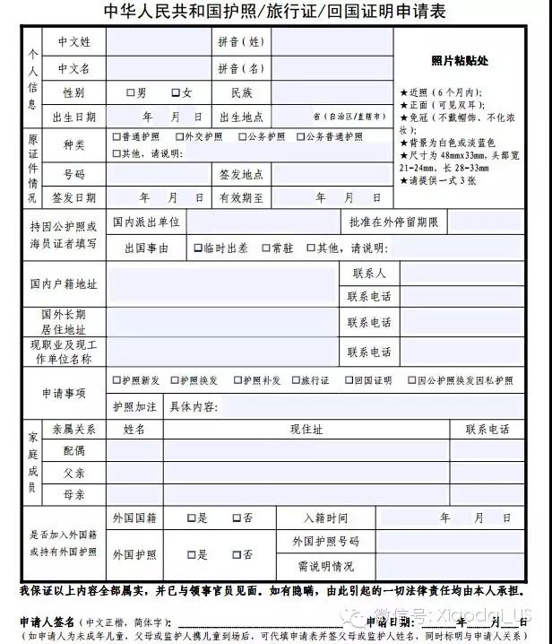
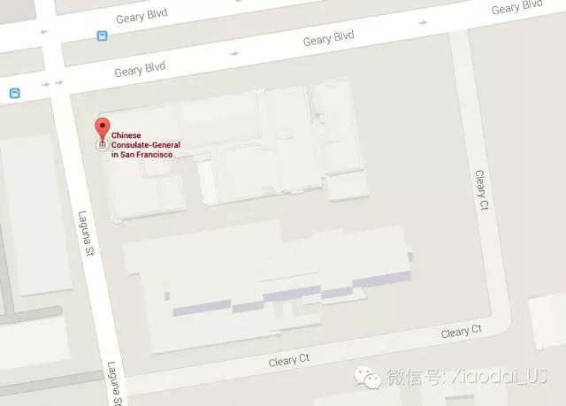
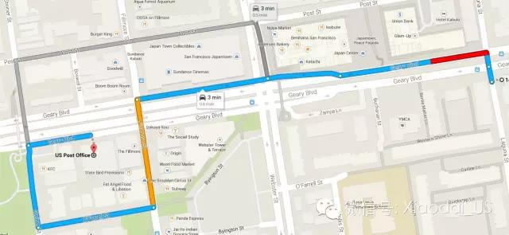

在美出生儿童申请旅行证全攻略
在美出生儿童申请旅行证全攻略
由于本人刚给小孩办了旅行证，所以对这个2015/03/27刚执行的新政策特别关注。第一时间分析了大量案例，在细则还未公布在中国使领馆的网页之前，抢先为大家理清了来龙去脉：

首先，父母为中国籍没有在国外定居的国外出生儿童，具有中国国籍，回国需办理旅行证。 这一条规定实行已久，大家都知道。
新规定：
1， 小孩如在两岁前未回过中国的，视为自动放弃中国国籍，回国必须办中国签证。这一新规定已经多个网友案例确认。实施日期为2015/03/27，即昨天。但各个领馆对这个“两岁”的判定不完全一样，旧金山领馆为24个月，洛杉矶为18个月。
[Ref1]
http://www.mitbbs.com/article_t/Returnee/13525999.html
[Ref2]
http://forums.huaren.us/showtopic.aspx?topicid=1802278
[Ref3]
http://www.mitbbs.com/article_t/NextGeneration/36809277.html
2, 另据网友案例汇报，即便两岁前回过国，再旅行至美国，居住超过两年的，也被视为放弃中国国籍。不能续签旅行证，只能申请中国签证。
[Ref4]
http://forums.huaren.us/showtopic.aspx?topicid=1802643&postid=66901516#66901516
3, 新规定根据的是最新的国籍法补充办法，最终解释权归领事所有。 这个所有给小孩办过旅行证的的父母都知道。旅行证申请是最严格的，必须由领事亲自“接见”孩子，才能确认并签字通过
本人刚去给孩子续签了旅行证，幸好她两岁前回过国，这次在美国待的时间也不到两年，才能顺利领证。感叹好幸运啊！
父母还没绿卡又想给孩子国内办个国内户口的，赶快在孩子两岁前申请旅行证回国吧。。。
旅行证申请全攻略
看了旅行证新政策原文后，很多朋友都来问我办子女旅行证的细节。所以决定写一篇我在旧金山办旅行证的全攻略，希望对大家有用。
1， 材料准备，这是整个过程中最费时的一步
1.1， 小孩材料： 出生证，美国护照，旧的旅行证（如有）。全都需要原件和复印件。
1.2， 父母材料： 结婚证（或结婚公证）原件和复印件，护照原件和非空白页复印件，新版I94打印件或老版的原件和复印件，父母在美身份证明（I797, I140, 绿卡相关文件等）的原件和复印件。 请确认带好小孩出身时的父母身份文件
1.3, 复印件如有遗漏，领馆里有收quarter的复印机。
2， 填表
2.1， 表格在这里下载：
http://www.chinaconsulatesf.org/chn/qianzhen/t554559.htm
2.2， 关键选项：
- 第一次办证原证件情况可按美国护照填写。如续签，按过期的旅行证填写。
- 拼音姓名需与原证件拼写保持一致，不一定要和中文名拼写一致
- 国内户籍地址填父母户籍地址。
- 外国国籍填否，外国护照填是。备注里写“美国出生”
3， 照片
3.1， 一套四张，小二寸。可自己制作：对着白底或浅蓝底的背景拍张大头照，传到 http://www.epassportphoto.com/， 尺寸选China passport，网站会帮你排版。
3.2， 如嫌麻烦，旧金山领馆里可以当场拍照。但有时机器会坏。
4， 地址和泊车
使馆地址为1450 Laguna St, San Francisco, CA 94115。车可以停在旁边的Cleary Ct上，位子足够，不过坡略陡
5， 申请，付费，和领证
5.1, 如果决定几天后去领馆自取的，那恭喜你，直接领号办理吧。收信用卡。
5.2, 如果打算让领馆给你寄回家的，领馆不收信用卡，请先去旁边的邮局买好一个已贴邮资的回邮信封，一张$35 Money order申请费，一张$5 Money order回邮费。
6, 面试见领事
父母面试好后需要等领事亲自面见小孩后才能签字通过申请。领事一般两三小时出来一次。所以要回邮先麻利点去邮局买好money order, 不然一耽误就是三小时。
About us
We provides bay area events and activities information.
Contact
funsbayarea at gmail.com.